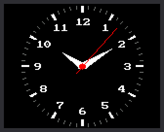

Lab 11: An Analog Clock Face

An analog clock shows the time with hands that sweep around a dial. This lab draws one: 60 tick marks, the numbers 1 to 12, and three moving hands. It also sets its own time from the internet.
Welcome to Lab 11
 Now your kit looks like a clock you could hang on a wall. You will
aim a hand at any spot on the dial and move it with no flicker.
Let's make time tick!
Now your kit looks like a clock you could hang on a wall. You will
aim a hand at any spot on the dial and move it with no flicker.
Let's make time tick!
What You Will Learn
- how to turn a time into an angle for each hand
- how to move a hand without redrawing the whole screen
- why the layout of a clock face matters to the program
Run It
- Open
11-analog-clock-face.pyin Thonny and click Run. - The screen says
Setting clockwhile it asks the internet for the time, as in lab 10. - The clock face appears, and the red second hand starts to tick.
No WiFi?
Near the top of the program, change SYNC_WITH_WIFI = True to
SYNC_WITH_WIFI = False. The clock then skips the internet and uses
the time Thonny set.
Every Hand Has an Angle
A hand starts at the center and points out at an angle, which is how far it has turned. This clock measures angles clockwise from 12 o'clock. A full turn is 360 degrees.
- The second hand takes 60 seconds for a full turn. So each second is 360 ÷ 60 = 6 degrees. The minute hand moves 6 degrees a minute.
- The hour hand takes 12 hours, so each hour is 360 ÷ 12 = 30 degrees. It also creeps forward as the minutes pass.
Check it on the picture at the top, which shows 10:10:
| Hand | The math | Angle | On the picture |
|---|---|---|---|
| Minute | 10 minutes × 6 | 60 degrees | right on the 2, which sits at 2 × 30 = 60 |
| Hour | 10 hours × 30, plus one sixth of 30 for the 10 minutes | 305 degrees | just past the 10, which sits at 300 |
The program does the same math:
1 2 3 4 5 6 7 8 | |
TWO_PIis a full turn. MicroPython's math measures angles in units called radians, and a full turn is about 6.28 of them. SoTWO_PI / 60is the same slice of the circle as 6 degrees.minute / 60is the creep. Thirty minutes adds half an hour.
From an Angle to a Spot on the Screen
To draw a hand, the program needs an x and a y for each end. A function
named point() finds them. You give it a direction and a distance, and
it answers with the x and y of that spot.
1 2 3 4 5 | |
The hand is one line. It runs from a short tail, 9 pixels out the
opposite way (-SECOND_TAIL), to the tip, 52 pixels out
(SECOND_LENGTH).
Inside, point() uses two math functions called sine and cosine. You
will meet them in a later grade.
Erase, Repair, Draw
The Tricky Part
 This next idea is the hardest in the kit so far, and it is normal to
read it twice. You did a small version in lab 07, when you repainted
one box and left the rest alone. Take the three steps one at a time.
This next idea is the hardest in the kit so far, and it is normal to
read it twice. You did a small version in lab 07, when you repainted
one box and left the rest alone. Take the three steps one at a time.
Some screens have a frame buffer: memory where a program builds the whole picture before showing it all at once. This kit has none. Every shape goes straight to the glass, so drawing the whole face again each second would flicker.
So the dial is drawn only once. After that, the program does three small jobs each second:
- Erase the old second hand by drawing it again in black.
- Repair the number that the black line cut through.
- Draw all three hands in their new places.
It is like rubbing one chalk line off a chalkboard drawing. The eraser also wipes a bit of whatever the line crossed, so you draw that bit back.
1 2 3 4 5 6 7 8 9 10 11 12 13 14 15 16 | |
- The first
draw_second_hand(...)is the erase. It draws the old hand again inBLACK. - The minute and hour hands are erased only when the minute changes.
draw_numeral(...)is the repair.numeral_under()finds the number the old second hand lay across.- The last four lines draw the three hands and the red dot. The white hands are drawn every second, in case the black line cut through one.
Only one number needs a repair because of where things sit on the dial. The tick marks are farther out than any hand reaches. The numbers are farther out than the hour and minute hands. So only the second hand ever crosses a number.
Try This
- Change
SECOND_COLOR = config.REDtoconfig.CYAN. Why does the dot in the middle change too? - In
draw_numeral(), changeWHITE, BLACK)toconfig.YELLOW, BLACK). The numbers stay yellow, even after a repair. - Break it on purpose. Change
SECOND_LENGTH = 52to60and watch for a minute. The second hand now reaches the tick marks, and its black eraser line chews them up. Nothing repairs a tick. Change it back when you finish.
If It Doesn't Work
- The screen says
Try 3 failedorNo secrets.py found, and then the time is wrong. The clock could not reach the internet. Get lab 10 working, or use the tip above. - A number or a tick has a piece missing. A hand is too long. Set
SECOND_LENGTHback to 52.
Your Clock Has Hands!
 You turned hours, minutes, and seconds into angles. You moved three
hands with no flicker: erase, repair, draw. Next, you will set the
time by hand with the knob.
You turned hours, minutes, and seconds into angles. You moved three
hands with no flicker: erase, repair, draw. Next, you will set the
time by hand with the knob.